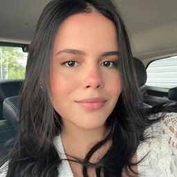
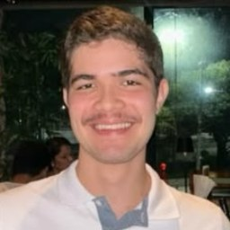
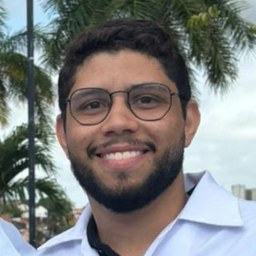
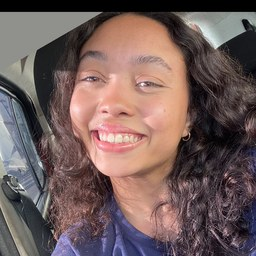

A LACGA é uma liga acadêmica da Universidade Federal do Maranhão dedicada ao ensino, à pesquisa e à extensão nas áreas de Cirurgia Geral e Anatomia Cirúrgica, promovendo o aprofundamento científico, a vivência prática e a formação ética dos estudantes de Medicina.

Quem somos
A LACGA é a Liga Acadêmica de Cirurgia Geral e Anatomia Cirúrgica da Universidade Federal do Maranhão, filiada ao Hospital Universitário Presidente Dutra (HUUFMA) e coordenada pelo Prof. Dr. Ozimo Gama.
Por meio de atividades acadêmicas, científicas e práticas, buscamos aprofundar conhecimentos, estimular a produção científica e contribuir para a formação ética e profissional dos estudantes.
A liga também promove a integração entre seus membros, professores e profissionais da área, incentivando a troca de experiências, o trabalho em equipe e o interesse pela cirurgia ao longo da formação médica.
Promove o aprofundamento dos conhecimentos em Cirurgia Geral e Anatomia Cirúrgica por meio de aulas, discussões científicas, palestras e outras atividades de formação acadêmica.
Incentiva o desenvolvimento de projetos científicos, a produção acadêmica e a divulgação do conhecimento nas áreas de interesse da LACGA.
Desenvolve ações que aproximam a universidade, os serviços de saúde e a comunidade, promovendo a troca de conhecimentos e a integração com a sociedade.
O que a liga entrega
Vivência no center cirúrgico dos principais hospitais de São Luís, acompanhando a rotina da cirurgia geral de perto.
Capacitações práticas de sutura e técnica cirúrgica: instrumentos, fios, agulhas e suas indicações.
Encontros abertos à comunidade acadêmica com especialistas sobre temas da Cirurgia Geral.
Desenvolvimento de trabalhos científicos, desde a elaboração do projeto até a preparação de resumos e apresentações.
Projetos que conectam a liga à comunidade e ampliam o impacto do que aprendemos.
Desenvolvimento de habilidades de liderança, comunicação, trabalho em equipe e organização.
Relatos
"Tive a oportunidade de conhecer o Centro Cirúrgico e desenvolver habilidades ainda no ciclo básico! A diversidade de estágios em diferentes áreas cirúrgicas fornece ensino prático associado a diferentes seguimentos de atuação."

"Entrar na LACGA tem sido uma oportunidade de aprender mais sobre a Cirurgia Geral e conhecer melhor a rotina dessa área. As atividades da liga permitem aprofundar assuntos que vemos na graduação, trocar experiências com outros estudantes e ter contato com diferentes aspectos da prática cirúrgica."

"A LACGA significa, para mim, não só uma idealização de um projeto de extensão, mas também o crescimento da minha formação como médico. Poder ter contato com o ambiente cirúrgico, médicos excepcionais e pacientes inesquecíveis moldaram e moldam minha forma de entender a medicina, as pessoas e a vida. Sou muito feliz por fazer parte dessa história e estar ao lado de pessoas dedicadas e comprometidas. Isso é LACGA."

A lacga tem um significado muito especial para mim, pois me proporciona oportunidades únicas de aprendizado, contato com profissionais incríveis e uma vivência cada vez mais próxima da medicina. Sou muito feliz por fazer parte dessa liga e por poder aprender tanto ao lado de pessoas tão especiais. É um privilégio fazer parte dessa liga e crescer junto com a LACGA! 🤍

Equipe
Conheça o orientador e os ligantes à frente de cada diretoria da LACGA.
Dúvidas frequentes
Estudantes de Medicina da UFMA. Os critérios de período e os requisitos de cada seleção são divulgados no edital do processo seletivo, sempre anunciado no nosso Instagram.
A seleção é aberta por edital, com etapas e datas publicadas no @lacgaufma. Ative as notificações para não perder a abertura.
Sim. Os estágios no HUUFMA permitem acompanhar procedimentos reais. Só no primeiro mês ativo foram mais de 70 procedimentos assistidos.
Não. A liga oferece treinamentos de técnica cirúrgica e sutura justamente para quem está começando.
Sim. A diretoria de Pesquisa orienta a produção científica, e os ligantes já tiveram trabalhos aprovados no COIMAMA e na SBAD.
Algumas atividades são abertas à comunidade acadêmica, com vagas limitadas. Fique de olho na divulgação de cada evento.